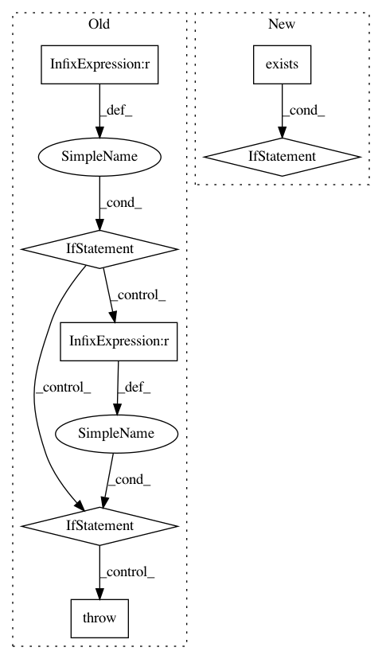

f0e416dbc2ff86c270d0cba7396f2ada61892033,src/pudl/workspace/setup_cli.py,,main,#,44
Before Change
coloredlogs.install(fmt=log_format, level="INFO", logger=logger)
args = parse_command_line(sys.argv)
if args.pudl_in is None:
raise ValueError(
f"Missing required argument pudl_in. See {sys.argv[0]} --help")
if args.pudl_out is None:
raise ValueError(
f"Missing required argument pudl_out. See {sys.argv[0]} --help")
// Given pudl_in and pudl_out, create a user settings file.
pudl_in = pathlib.Path(args.pudl_in).expanduser().resolve()
logger.info(f"Setting default pudl_in: {pudl_in}")
if not pathlib.Path.is_dir(pudl_in):
raise FileNotFoundError(
After Change
// Only print out this information and do the defaults setting if that has
// been explicitly requested, or there are no defaults already:
if not pudl_defaults_file.exists() or args.clobber is True:
logger.info(f"Setting default pudl_in: {pudl_in}")
logger.info(f"Setting default pudl_out: {pudl_out}")
logger.info(f"You can update these default values by editing "
f"{pudl_defaults_file}")
pudl.workspace.setup.set_defaults(pudl_in, pudl_out,
clobber=args.clobber)
pudl.workspace.setup.init(pudl_in=pudl_in,
pudl_out=pudl_out,
clobber=args.clobber)
In pattern: SUPERPATTERN
Frequency: 3
Non-data size: 7
Instances
Project Name: catalyst-cooperative/pudl
Commit Name: f0e416dbc2ff86c270d0cba7396f2ada61892033
Time: 2019-08-19
Author: zane.selvans@catalyst.coop
File Name: src/pudl/workspace/setup_cli.py
Class Name:
Method Name: main
Project Name: Microsoft/nni
Commit Name: e0b692c96565074d4cb148e6011b2007d0a55348
Time: 2020-03-23
Author: Quanlu.Zhang@microsoft.com
File Name: examples/model_compress/model_speedup.py
Class Name:
Method Name:
Project Name: suavecode/SUAVE
Commit Name: f142fa15ec68e5ea806d4e61a8cfe0a561ef6bce
Time: 2019-09-24
Author: mclarke2@stanford.edu
File Name: trunk/SUAVE/Analyses/Aerodynamics/AVL_Inviscid.py
Class Name: AVL_Inviscid
Method Name: sample_training